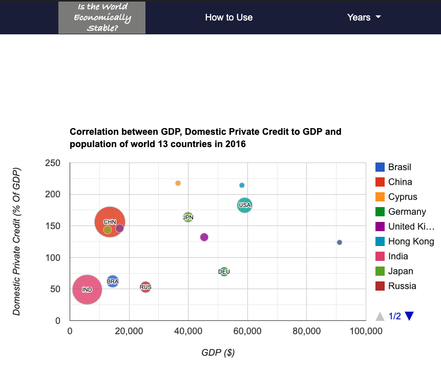

Is the World Economically Stable?
How to Use
Chart

Home
This page
Chart page
Bubble chart: each bubble represents a country
Check details by hovering over bubbles
Country names
Year slider
Year chosen for the charts at the moment
Pie chart